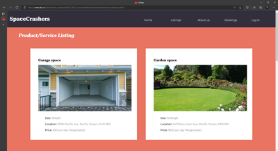
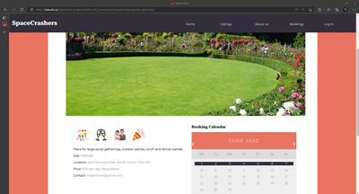
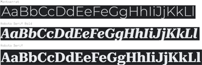
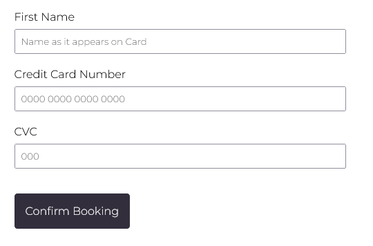
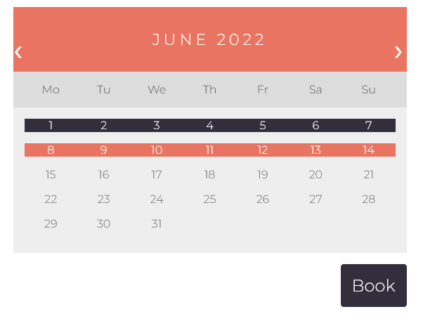

SpaceCrashers
Overview
SpaceCrashers was built with the purpose of helping people who are looking for the perfect place in their neighbourhood to perform their urgent tasks. Whether it's a small or a grand event, we got everything covered.
The website was developed in a team of two by working on different features using the popular version control system, Github. We started on the website by creating a style guide, and using HTML, CSS and JavaScript we gave the website life. Progressive enhancement strategy is used throughout the development stage to ensure the website is responsive. With effective communication and a strict schedule, our teamwork got better every week and we were able to see a positive result in the end.
 Fonts
Three different types of fonts were used to represent the brand. The first font is Montserrat Light which has great readibility so using the font in our website served the purpose of helping users to skim through the contents quickly and decide things faster. The next two fonts are Roboto Serif Bold and Roboto Serif Italic which were used for headings and are the type of fonts which are clear and gives improved experience to the users, therefore helps to differentiate between contents without making the user puzzled.
Colors
To match the values of the brand, five different colors- medium aquamarine, terra cotta, dark salmon, raisin black and moonstone blue - were used. Thinking of the tranquility and the happiness of the people, medium aquamarine and dark salmon colors became our choice which possess qualities of serenity, health and happiness. Next we thought of the colors that represented energy in combination with the earth and nature that connects people, and we ended up with the colors, terra cotta and raisin black, which were a good match. Finally, to incorporate modern and graceful look, moonstone blue became our last pick.
Forms
The checkout, login and sign-up pages of the website were done using HTML forms. A placeholder is used for guiding the user for the type of input expected, and the labels are connected with the inputs for correct matching of fields. Each page using forms has a button for submission which has background-color of dark salmon when hovered.
Calendar
I worked on the calendar section in the individual listing pages by using HTML div element and CSS grids. The black highlighted portion of the calendar shows the date which are booked and the section hightlighted with the dark salmon are the days after selection by the current user with rest of the unhightlighted days still available for booking. Once days are selected, the booking can be made hitting the Book button.
Key takeaways
Collaborating in team through github was challenging as this was my first time learning to use it but by struggling throughout the process I managed to master it to some extent. JavaScript was new as well, so I had less experience with using it in the project but being a person who has coding experience with languages like Java, C++, getting proficient with the language in the near future is the goal. Moreover, skills I believe I obtained by working on this project is managing the tasks in an organized manner, quickly implementing the changes based on feedback and last of all, handling disagreements in a team with a positive attitude without having a negative impact on the work flow. Every chance I got in the project I took it as the path to learning something new.